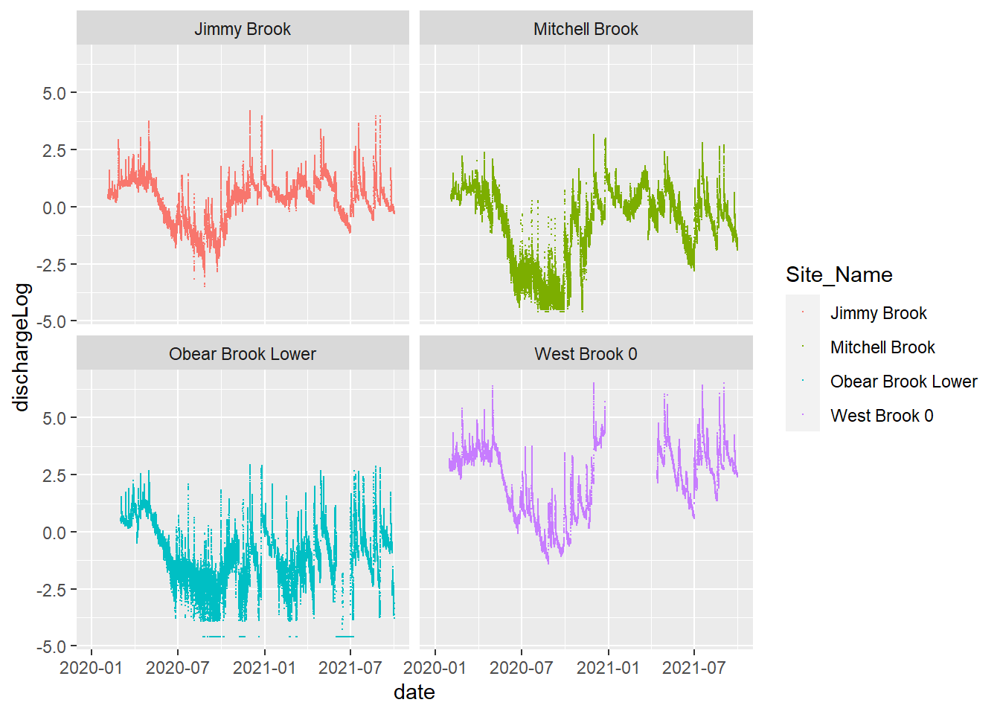
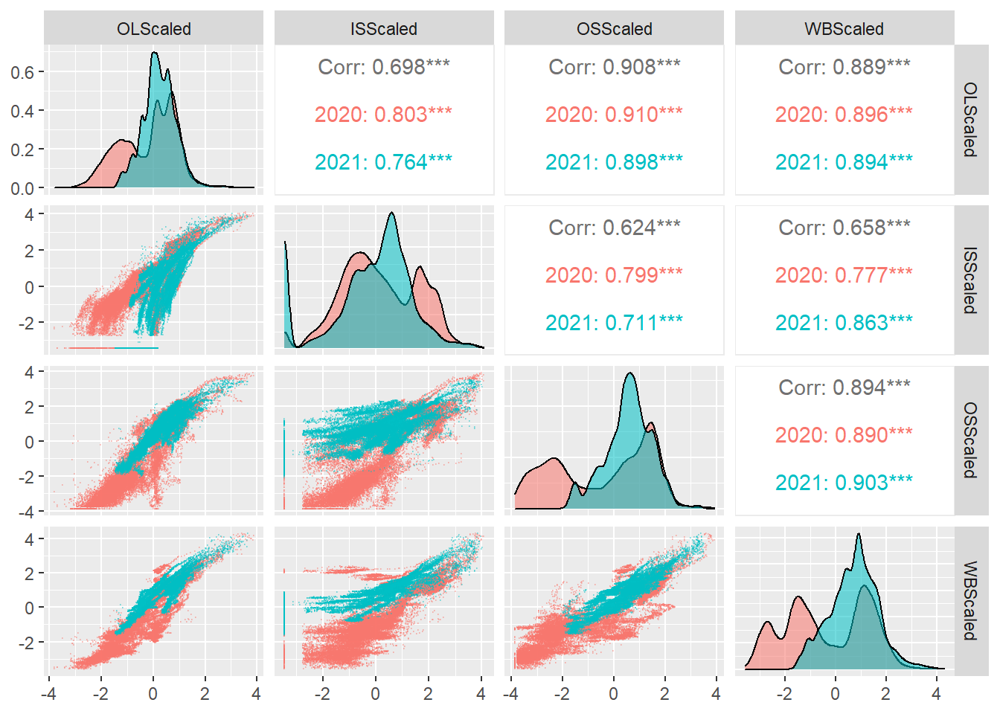
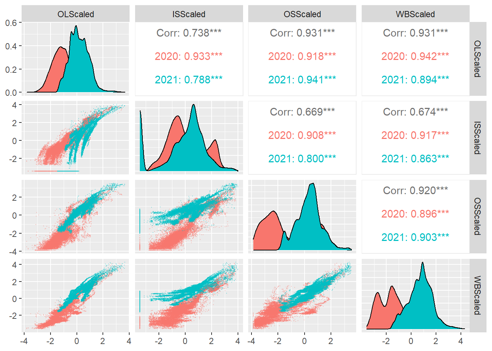

9 Flow model
dataFlow <- tar_read(dataFlow_target)
dFlow <- tar_read(dFlow_target)
dFlowWide <- tar_read(dFlowWide_target)tibble(dataFlow)# A tibble: 582,388 × 9
Station_No Site_Name DateTi…¹ GageH…² Disch…³ Water…⁴ AirPr…⁵ AirTe…⁶ X
<int> <chr> <chr> <dbl> <dbl> <dbl> <dbl> <dbl> <lgl>
1 1171000 Avery Brook 2/20/20… 4.17 5.37 32.0 NA NA NA
2 1171000 Avery Brook 2/20/20… 4.17 5.3 32.0 NA NA NA
3 1171000 Avery Brook 2/20/20… 4.16 5.17 32.0 NA NA NA
4 1171000 Avery Brook 2/20/20… 4.17 5.27 32.0 NA NA NA
5 1171000 Avery Brook 2/20/20… 4.17 5.3 32.0 NA NA NA
6 1171000 Avery Brook 2/20/20… 4.15 4.94 31.9 NA NA NA
7 1171000 Avery Brook 2/20/20… 4.13 4.56 31.9 NA NA NA
8 1171000 Avery Brook 2/20/20… 4.1 4.14 31.9 NA NA NA
9 1171000 Avery Brook 2/20/20… 4.08 3.84 31.9 NA NA NA
10 1171000 Avery Brook 2/20/20… 4.09 4.02 31.9 NA NA NA
# … with 582,378 more rows, and abbreviated variable names ¹DateTime_EST,
# ²GageHeight_Hobo_ft, ³Discharge_Hobo_cfs, ⁴WaterTemperature_HOBO_DegF,
# ⁵AirPressure_PSI, ⁶AirTemperature_HOBO_degF
# ℹ Use `print(n = ...)` to see more rowstable(dataFlow$Site_Name)
Avery Brook Jimmy Brook Mitchell Brook
56536 57849 56978
Obear Brook Lower Sanderson Brook West Brook 0
60392 55336 58548
West Brook Lower West Brook Reservoir West Brook Upper
61279 61059 57301
West Whately Brook
57110 #check for real entries
dFlow %>% filter(is.infinite(dischargeLog)) [1] Station_No Site_Name
[3] DateTime_EST GageHeight_Hobo_ft
[5] Discharge_Hobo_cfs WaterTemperature_HOBO_DegF
[7] AirPressure_PSI AirTemperature_HOBO_degF
[9] X date
[11] site dischargeLog
<0 rows> (or 0-length row.names)ggplot(dFlow, aes(date, dischargeLog, color = Site_Name)) +
geom_point(size = 0.02) +
facet_wrap(~Site_Name)
ggpairs(dFlowWide,
columns = 6:9,
mapping = ggplot2::aes(color = as.factor(year), alpha = 0.7),
#diag = list(continuous = myDens),
lower = list(continuous = wrap("points", alpha = 0.3, size=0.1),
combo = wrap("dot", alpha = 0.4, size=0.2))
)
ggpairs(dFlowWide %>% filter(yday > 90, yday < 300),
columns = 6:9,
mapping = ggplot2::aes(color = as.factor(year)),
lower = list(continuous = wrap("points", alpha = 0.3, size=0.1),
combo = wrap("dot", alpha = 0.4, size=0.2))
)
ggpairs(dFlowWide %>% filter(yday == 110),
columns = 8:11,
mapping = ggplot2::aes(color = as.factor(year)),
lower = list(continuous = wrap("points", alpha = 0.3, size=0.2),
combo = wrap("dot", alpha = 0.4, size=0.2))
)